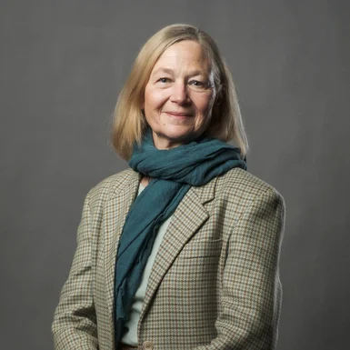

01
Poster
ArabicDialectHub: A Cross-Dialectal Arabic Learning Resource and Platform
Salem Lahlou
A full-day international workshop advancing language technology for Arabic, Perso-Arabic and Ajami languages, bringing together research on low-resource NLP, writing systems, multilingual modelling and community-driven language technology.
AbjadNLP 2026 focused on advancing NLP for Arabic and the wider family of languages written in Arabic-derived scripts. Following the inaugural 2025 edition at COLING in Abu Dhabi, the workshop returned in Rabat as part of SIGARAB, the ACL Special Interest Group on Arabic NLP.
The workshop was designed around a deliberately broad linguistic scope. It connected Arabic NLP with Perso-Arabic and Ajami traditions, and placed low-resource language technology, linguistic diversity, open resources and cross-community collaboration at the centre of the programme.
The organisers also highlighted close links with the Masakhane community and a wider commitment to inclusive, community-driven NLP across Africa, the Middle East and Asia.
Modern Standard Arabic, Classical Arabic and dialectal varieties, including research on morphology, language modelling, generation and evaluation.
Persian, Urdu, Pashto, Sorani Kurdish, Azeri, Ottoman Turkish, Sindhi, Uyghur and other Arabic-derived writing traditions.
Hausa, Fula, Wolofal, Swahili, Kanuri, Mandingo, Tamazight and other African languages written with Arabic-derived scripts.
The 2026 workshop welcomed research across core NLP, applications, resource creation, sociolinguistics and interdisciplinary work for Arabic-script languages.
Morphology, tokenisation, tagging, parsing, named entities, sentiment and language modelling, including LLMs for low-resource settings.
Machine translation, speech technologies, OCR and handwriting recognition, question answering, dialogue systems and social media analysis.
Corpora, lexicons, orthography documentation, annotation resources and tools for low-resource or marginalised languages.
Code-switching, dialects, transliteration, orthographic variation and language preservation.
Ethics, fairness, evaluation and research practices that better serve under-represented language communities.
Language technologies for education, health, finance, legal applications and cultural heritage.

Computer Science faculty member at Al Akhawayn University whose work has included machine translation, language learning through reading, readability and Arabic language technology.
The keynote examined the lack of a single standard writing convention for Moroccan Arabic, previous attempts to systematise Darija orthography, and the practical choices involved in building language-learning and computational resources for a highly variable written dialect.
Speaker profile ↗Salem Lahlou
Manodyna K H, Luc De Nardi
Rabab Alkhalifa
Auda Elshokry, Mohammed Alhanjouri
Mo El-Haj
Ahmed Khamis, Hesham Ali Ahmed
Duy Minh Dao Sy, Trung Kiet Huynh, Nguyen Dinh Ha Duong, Nguyen Chi Tran, Phu Quy Nguyen Lam, Hoa Pham Phu
Henry Gagnier, Sophie Gagnier, Ashwin Kirubakaran
Mahdi Alshaikh Saleh, Irfan Ahmad
Arabov Mullosharaf Kurbonovich
Sohaila Abdulsattar, Keith Ross
Amrita Singh
Ahmed Khamis
Henry Gagnier, Sophie Gagnier
Gleb Shanshin
Minh-Hoang Le
Abdallah Khallouf
Thanh Phu Nguyen, Tuan Thai Huy Nguyen Cu, Son Thai Pham, Tri Duy Ho Nguyen
Nahid Montasir Rifat, Foyez Ahmed Dewan
Fatimah Mohamed Emad Eldin
Rahul Jaisy
Ibad-ur-Rehman Rashid, Junaid Hussain, Sadam Al-Azani
Soumedhik Bharati, Shibam Mandal, Prithwish Ghosh, Swarup Kr Ghosh, Sayani Mondal
Soumedhik Bharati, Shibam Mandal, Subham Majumdar, Swarup Kr Ghosh, Sayani Mondal
Olga Snissarenko
Noor Fatima, Hasan Faraz Khan, Irfan Ahmad
Samir Belayachi, Azzeddine Mazroui
Hasan Faraz Khan, Noor Fatima, Irfan Ahmad
Nawal Haidar, Ahmad Kashmar, Fadi Zaraket
Samaher Alghamdi, Paul Rayson, Reem Alotibi
Rayyan S. Al Khadhuri, Firas Al Mahrouqi, Salim Al Mandhari, Amir Azad Al-Kathiri, Omar Said Alshahri, Ghassab Mansoor Alsaqr, Badri Abdulhakim Mudhsh, Tarek Fatnassi
Hasan Abed Al, Kader Hammoud, Mohamad Bilal Zbib, Bernard Ghanem
Youssef Karout, Hadi Hammoud, Fadi Zaraket
Ahmed Mustafa Younes
Ghada Alfattni
Abdulkadir Shehu Bichi, Muqaddar Ali, Prashant Sharma, Ismail Dauda Abubakar
Waleed Jamil, Saima Rafi
Sara Faqihi, Karim Bouzoubaa, Rachida Tajmout, Driss Namly
Omar elshehy, Omer Nacar, Abdelbasset Djamai, Muhammed Ragab, Khloud Al Jallad, Mona Abdelazim
Wafa Mohammed Alshehri, Wasfi G. Al-Khatib, Mohammad Ismail Amro
Josef Jon, Rawan Bondok, Ondřej Bojar
Fawzia Zaal Alanazi, Asma Mohammed Alamri, Arwa Bin Saleh, Abdullah I. Alharbi
Osamah A. I. Abduljalil, Dalal Ali, Razan A. Bajaman, Abdullah I. Alharbi
Ahmed Khamis
Mohamad Bilal Zbib, Hasan Abed Al Kader Hammoud, Ammar Mohanna, Nadine Rizk, Fatima Karnib, Sina Moukaled, Bernard Ghanem
Ahmed Megahed Fetouh, Mohammed Rahmath, Omer Dawood, Mariam Labib, Nsrin Ashraf, Hamada Nayel
Karim Bouzoubaa, Driss Namly, Hamid Jihad, Rachida Tajmout, Jamal Ezzouaine, Hakima Khamar
Ali Faheem, Faizad Ullah, Muhammad Hammad, Ahmed Hassan, Muhammad Sohaib Ayub, Asim Karim
Sujith Kanakkassery
Najwa Abdullah AlGhamdi, Sadam Al-Azani, Kwabena Nuamah, Alan Bundy
Wajdi Zaghouani, Eman Sedqy Shlkamy, Mabrouka Bessghaier
Duy Minh Dao Sy, Nguyen Chi Tran, Trung Kiet Huynh, Nguyen Lam Phu Quy, Pham Phu Hoa, Nguyen Dinh Ha Duong
Duy Minh Dao Sy, Trung Kiet Huynh, Nguyen Chi Tran, Nguyen Lam Phu Quy, Pham Phu Hoa, Nguyen Dinh Ha Duong
Rabee Adel Al-Qasem
Trung Kiet Huynh, Duy Minh Dao Sy, Nguyen Chi Tran, Pham Phu Hoa, Nguyen Lam Phu Quy, Truong Bao Tran
Mohannad Mohammad Hendi
Ali Zain
Saeed A. Anabtawi
Youssef Zaghloul
Fatimah Mohamed Emad Eldin
Mohamed Hussein Mohamed, Shrouk Shalaby, Nesreen Mohamed
Mariam Labib Francies, Nsrin Ashraf, Ahmed Megahed Fetouh, Hamada Nayel
Fizza Nawaz, Ibad-ur-Rehman Rashid, Uswa Abid, Junaid Hussain
Pranav Gupta, Niranjan Kumar M, Balaji Nagarajan, Imed Zitouni, Mo El-Haj
Shahad Alsuhaibani, Mohamed Alkaoud
Ghader Kurdi
Rania Azad M. San Ahmed, Rebwar M. Nabi
Saad Ezzini, Irfan Ahmad, Salmane Chafik, Shadi Abudalfa, Mo El-Haj, Ahmed Abdelali, Mustafa Jarrar, Nadir Durrani, Hassan Sajjad, Farah Adeeba
Shadi Abudalfa, Saad Ezzini, Ahmed Abdelali, Mustafa Jarrar, Mo El-Haj, Nadir Durrani, Hassan Sajjad, Farah Adeeba, Sina Ahmadi
Shadi Abudalfa, Saad Ezzini, Ahmed Abdelali, Mustafa Jarrar, Mo El-Haj, Nadir Durrani, Hassan Sajjad, Farah Adeeba
The programme committee reflects the workshop's international and multilingual scope, with expertise spanning Arabic, multilingual NLP, low-resource language technology and related fields.
The Rabat workshop built on the inaugural Abu Dhabi edition and established the foundation for the third edition of AbjadNLP in Athens.
Inaugural edition, co-located with COLING 2025.
Second edition, co-located with EACL 2026.
Current edition, co-located with EACL 2027.